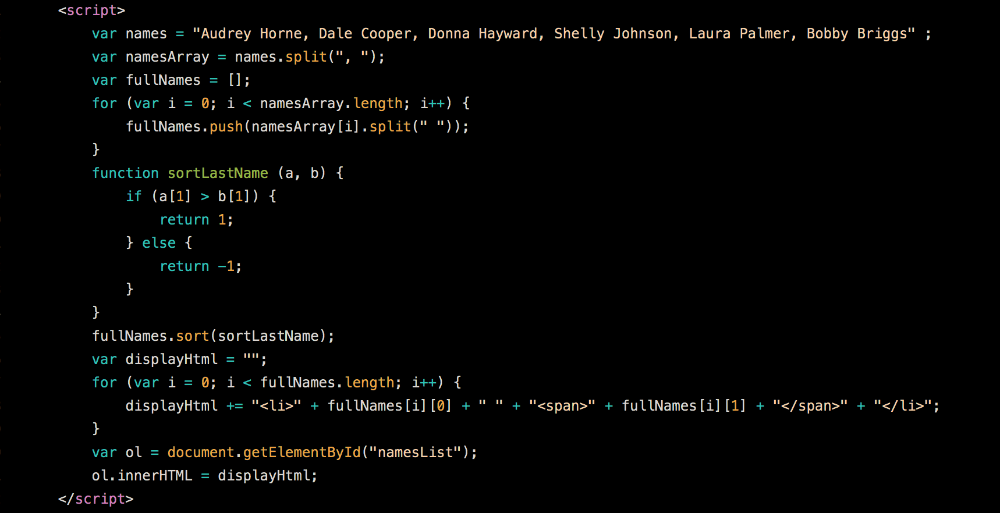
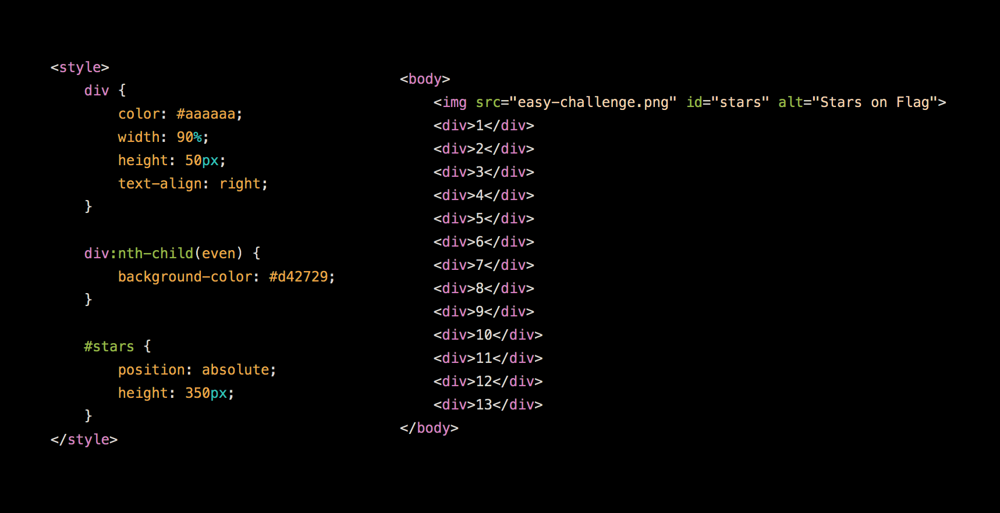
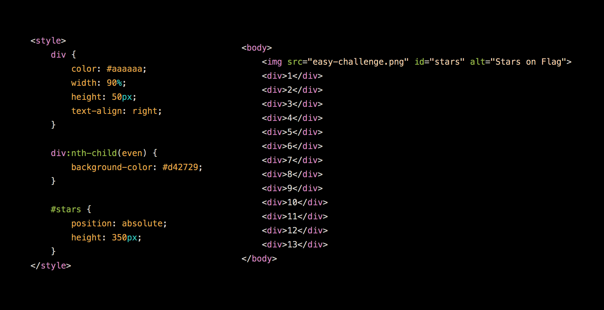

Selected Works
The very first JavaScript challenge we received. Click the image to see the full code.
An easy CSS challenge to recreate the American flag. Click the image to see the full code.
The very first JavaScript challenge we received. Click the image to see the full code.
An easy CSS challenge to recreate the American flag. Click the image to see the full code.